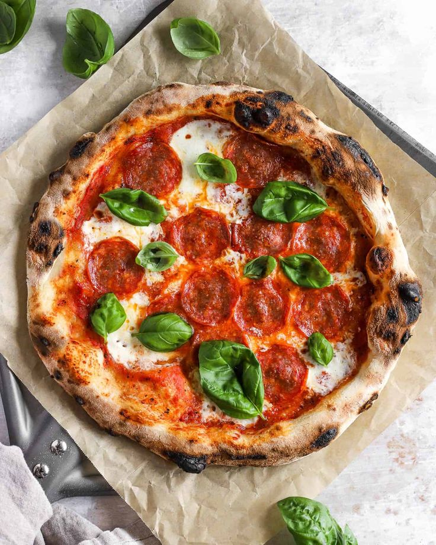

Pizza
- pâte à pizza
- tomate
- fromage
- sel
Étalez une couche de sauce tomate.
Ajoutez la mozzarella en tranches, le jambon, les lamelles de poivron.
Saupoudrez d'origan et ajoutez un filet d'huile d'olive.
Faites cuire dans un four préchauffé à 220°C.
La pâte doit être dorée et croustillante, et le fromage bien fondu.